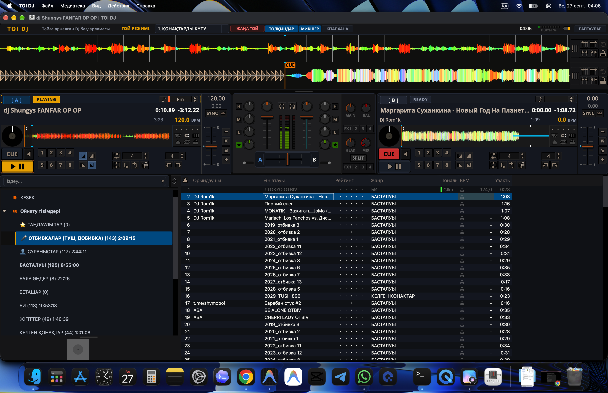
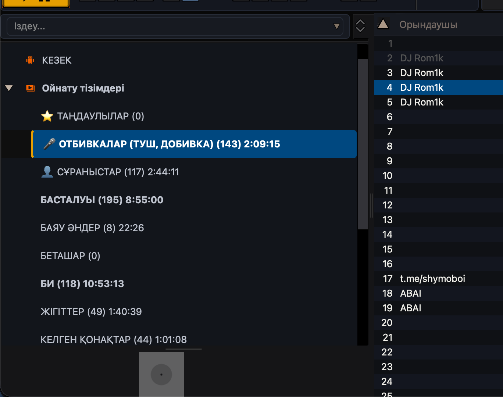

Батадан қоштасуға дейінгі 12 кезеңді бір түймемен басқарыңыз. Жедел Spacebar паузасы, дайын 80+ сахналық отбивкалар және кристалды таза интерфейс.

Күрделі диджейлік бағдарламалардың шатастыратын батырмалары жоқ. Барлығы той динамикасына сәйкестендірілген.
Той бір кезеңнен екінші кезеңге өткенде, диджей саспайды.
Alt + 1-ден Alt + =-ке дейін кез келген кезеңді таңдаңыз — сол кезеңнің реттелген плейлисті автоматты түрде ашылады.
Тамада микрофонды алғанда немесе сөз бастағанда — Пробелді (Space) бір рет басыңыз. Қайсы дек ойнап тұрса, сол дек бірден тоқтайды. Қайта бассаңыз — сол жерден жалғасады.
Қонақ шыққанда, қайтқанда, шапалақ ұрғанда қойылатын таза сахналық отбивкалар. Артық жаңажылдық және ұзын әндерден тазартылған.
Рейтинг, Жанр, Тональ, BPM сияқты тойға қажетсіз бағандар алынып тасталған. Тек орындаушы, ән атауы және ұзақтығы ғана қалып, көзді шаршатпайды.

M1, M2, M3, M4 чиптеріне арнайы компиляцияланған. CoreAudio драйвері арқылы дыбыс бір секундқа да кідірмейді, қатып қалмайды.
Тойда уақыт тығыз. Басты операциялар үшін пернетақта комбинациялары дайындалған.
| Перне | Әрекет | Сипаттамасы |
|---|---|---|
| Space (Пробел) | Play / Pause | Ойнап тұрған декті лезде тоқтату немесе қайта жалғастыру |
| Alt + 1 .. = | Той Кезеңдері | Бата, Беташар, Кіру, Жар-Жар сияқты 12 кезеңге жедел өту |
| Ctrl + Shift + A | Deck A-ға жүктеу | Таңдалған тректі бірден сол жақтағы Deck 1-ге жүктейді |
| Ctrl + Shift + S | Deck B-ге жүктеу | Таңдалған тректі оң жақтағы Deck 2-ге жүктейді |
| Ctrl + Shift + Q | Очередьке қосу | Әнді кезекке (Queue) қосады |
| Ctrl + Shift + W | Сұраныстарға салу | Қонақтар сұраған әндерді бөлек сұраныс тізіміне жібереді |
| Ctrl + Shift + D | Таңдаулыларға қосу | Хит тректерді сүйіктілер тізіміне сақтайды |
| D / L | Дек 1 / Дек 2 Play | Әр декті жеке-жеке ойнату/пауза жасау |
TOI DJ барлық негізгі операциялық жүйелерді қолдайды.
Apple Silicon (M1/M2/M3/M4) және Intel процессорлары. DMG орнатушы мен ZIP мұрағат түрінде дайын.
64-биттік Windows жүйелері үшін. GitHub Actions арқылы автоматты түрде жиналатын релиздер мен бастапқы код.
Ubuntu, Debian, Fedora, Arch Linux. Орнатусыз іске қосылатын AppImage және CMake арқылы құрастыру.
Толық тегін және ашық бастапқы кодты жоба.
Control + Басу → Open (Ашу) батырмасын басыңыз.